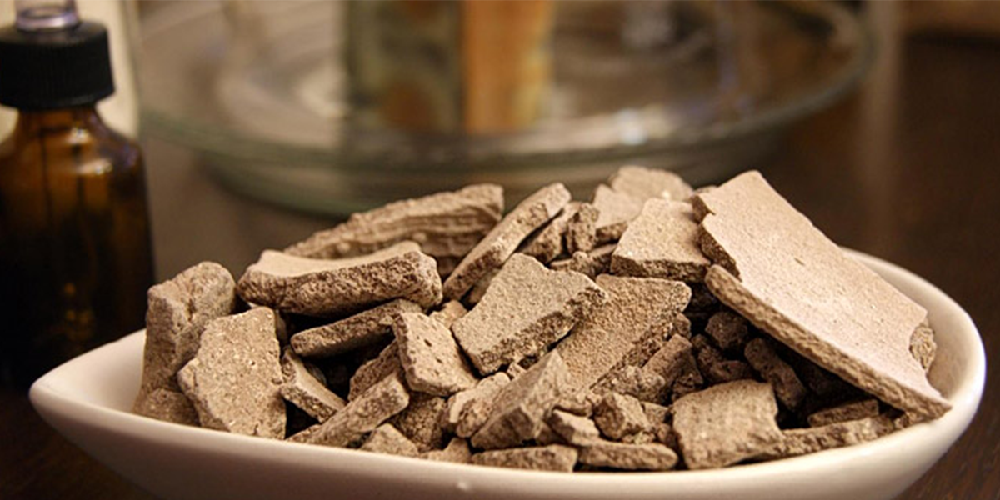

Kit Limpiador Facial
La arcilla Ghassoul es proveniente de Marruecos, es conocida por sus propiedades de lavado y ablandamiento. Limpia sin irritar y desengrasa respetando la película hidrolipídica de la piel y el cabello. Utilizada en la piel, limpia, purifica y aporta sales minerales, también tiene propiedades descongestionantes y suavizantes.

Ingredientes
- 50 gr de arcilla Ghassoul
- 10 ml de tónico de lavanda
- 5 ml de aceite de semillas de uva
Nota: Esta receta rinde 60 gr de arcilla cremosa.
Instrucciones
- En el recipiente que se le incluye en el kit mezcle la arcilla Ghassoul con el tónico de lavanda, lentamente hasta obtener una pasta suave.
- Luego agregue lentamente el aceite de semillas de uva y siga mezclando suavemente hasta que se compacte la mezcla.
- Aplique con una espátula sobre la zona a tratar, cara o cabello y deje al menos 30 minutos.
- Retire con agua tibia o fría según su preferencia. No se recomienda el uso de jabón después de usar la mascarilla.
¡Disfrútala, compártela y cuéntanos tu experiencia!